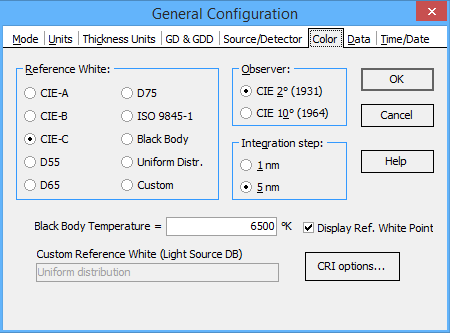

Color options
Using Color General Configuration option you can customize computations of coating color characteristics.

Reference White group allows choosing of light source that is used as a reference white in some color systems. The user can select between several standard light sources that are often used as a reference white. It is also possible to use the spectrum of a black body or a custom light source.
If the Black Body option is selected in the Reference White group, then it is necessary to specify the Black Body Temperature.
If the Custom option is selected in the Reference White group, then it is necessary to specify a custom light source file that should be used as a reference white source. This file should be already present in the Light Source/Detector database in the current Problem Directory.
Observer determines the kind of an observer used in color calculations.
Integration step specifies the grid that is used for color calculations. Usually 5 nm integration step is sufficient for the most types of coatings. 1 nm step may be required for coatings having rapid variations of spectral characteristics wavelength dependencies.
Dispay Ref. White Point allows displaying this point at color diagrams together with the performance of the current coating.
CRI options… button opens a supplementary dialog setting a set of color samples for Color Rendering Index evaluation.